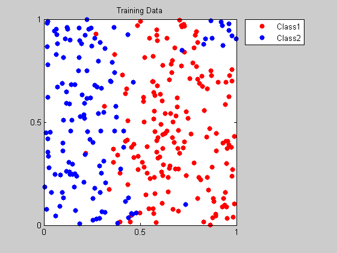
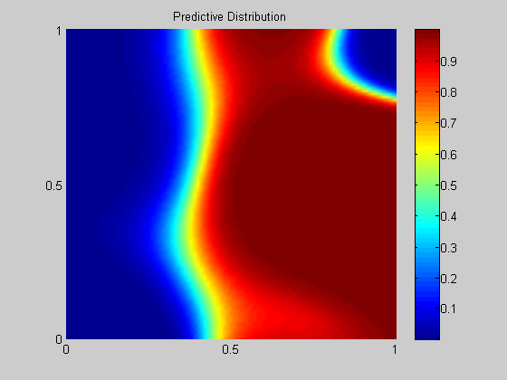

Logistic Regression: Visualizing the Predictive Distribution
Here we fit a logistic regression model to synthetic data and visualize the predictive distribution. We use an L2 regularizer and perform an RBF expansion of the data.
Contents
Load and Plot the Data
Our synthetic data consists of 300 2D examples from two different classes, 1 and 2.
load synthetic2Ddata figure; plot(X(Y==1,1),X(Y==1,2),'.r','MarkerSize',20); hold on; plot(X(Y==2,1),X(Y==2,2),'.b','MarkerSize',20); set(gca,'XTick',0:0.5:1,'YTick',0:0.5:1); title('Training Data'); legend({'Class1','Class2'},'Location','BestOutside');
Create the Data Transformer
We will make use of PMTK's transformer objects to easily preprocess the data and perform the basis expansion. We chain three transformers together, which will be applied to the data in sequence. When we pass our chainTransformer to our model, (which we will create shortly), all of the details of the transformation are retained, and where appropriate, applied to future test data.
sigma2 = 1; % kernel bandwidth T = chainTransformer({standardizeTransformer(false) ,... kernelTransformer('rbf',sigma2)} );
Create the Model
We now create a new logistic regression model and pass it the transformer object we just created.
model = multinomLogregDist('nclasses',2, 'transformer', T);
Fit the Model
To fit the model, we simply call the model's fit method and pass in the data. Here we use an L2 regularizer, however, an L1 sparsity promoting regularizer could have been used just as easily by replacing the string 'l2' with 'l1'.
lambda = 1e-3; % L2 regularizer model = fit(model,'prior','l2','lambda',lambda,'X',X,'y',Y);
We can specify which optimization method we would like to use by passing in its name to the fit method as in the following. There are number of options but reasonable defaults exist.
model = fit(model,'prior','l2','lambda',lambda,'X',X,'y',Y,'method','lbfgs');
Predict
To visualize the predictive distribution we will first create grid of points in our original 2D feature space and evaluate the posterior probability that each point belongs to class 1.
[X1grid, X2grid] = meshgrid(0:0.01:1,0:0.01:1); [nrows,ncols] = size(X1grid); testData = [X1grid(:),X2grid(:)];
The output of the predict method is a discrete distribution over the class labels. We extract the probabilities of each test point belonging to class 1 and reshape the vector for plotting purposes.
pred = predict(model,testData); % pred is an object - a discrete distribution
pclass1 = pred.probs(:,1);
probGrid = reshape(pclass1,nrows,ncols);
Plot the Predictive Distribution
We can now make use of Matlab's excellent plotting capabilities and plot the surface of the distribution.
figure; surf(X1grid,X2grid,probGrid); shading interp; view([0 90]); colorbar; set(gca,'XTick',0:0.5:1,'YTick',0:0.5:1); title('Predictive Distribution');